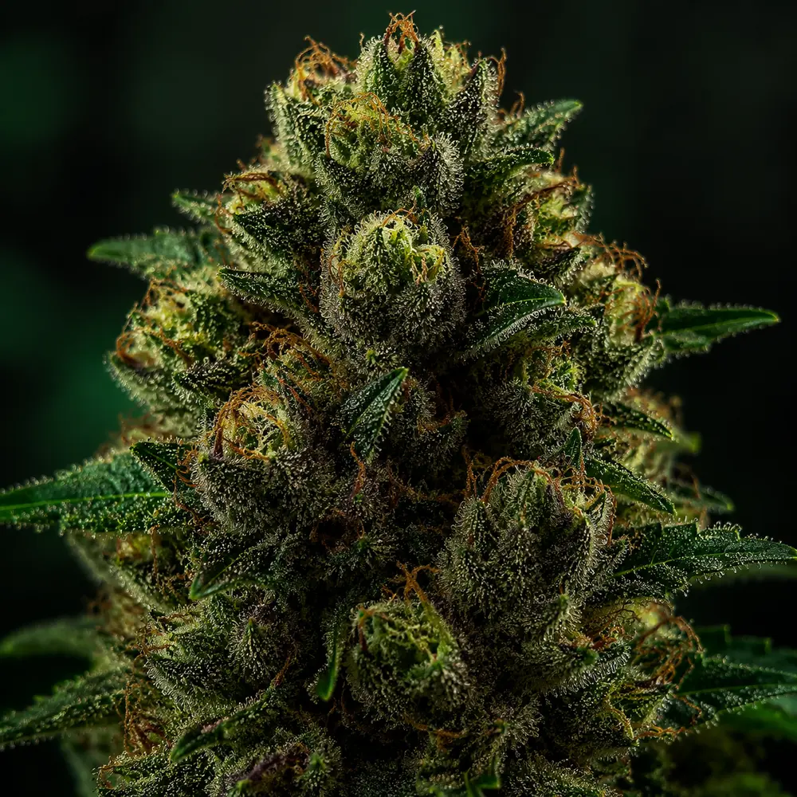
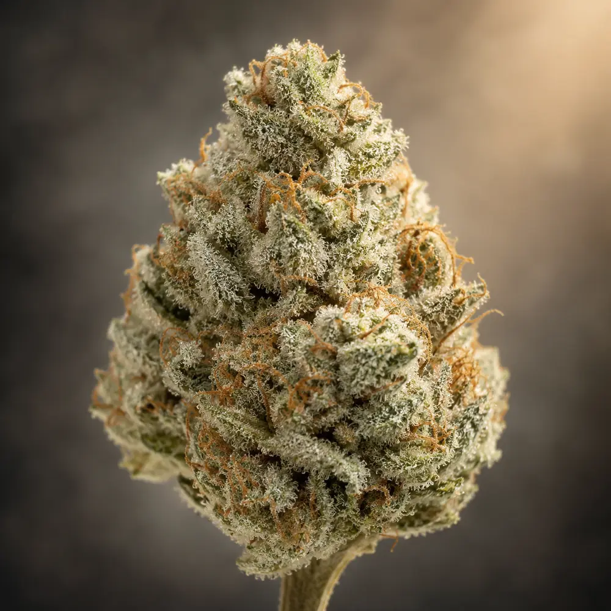
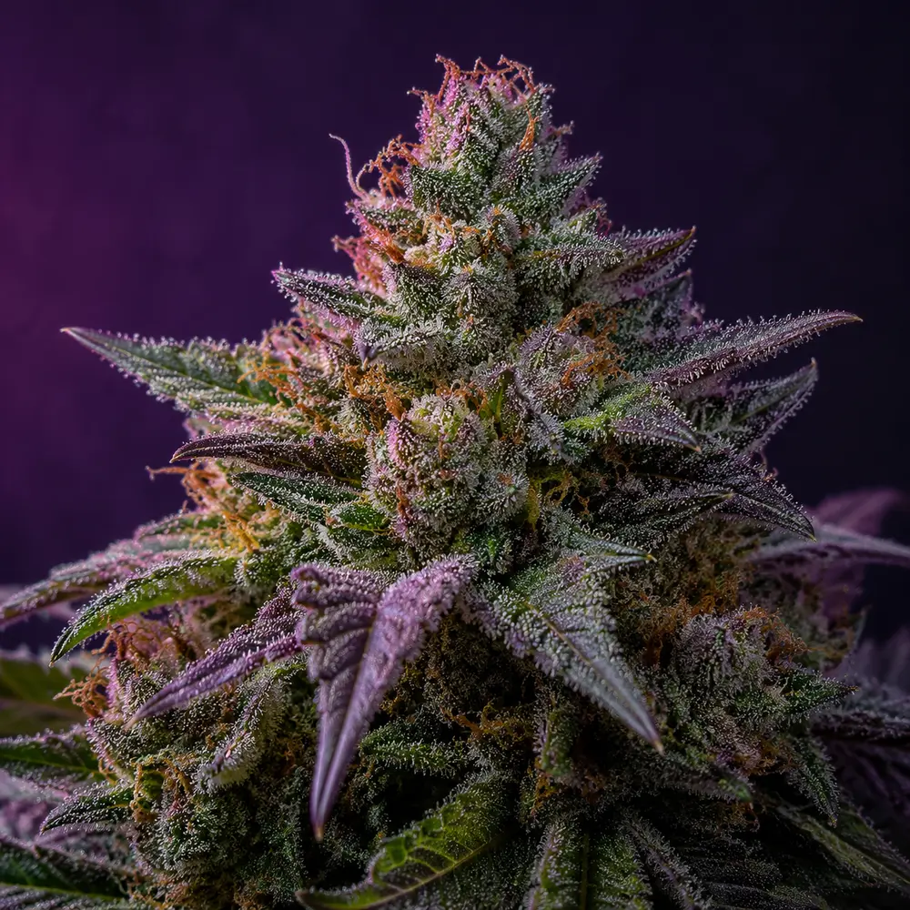

56 STRAIN FIELD NOTES
FAMOUS NAMES.
HONEST CAVEATS.
History, aroma language, reputation, batch questions, and the warning every strain page should carry.
No field note matched that search. Try a strain family, aroma word, or broader name.
 BRIGHT SHORTHAND
BRIGHT SHORTHANDFIELD NOTE
Acapulco Gold
earth, toasted sweetness, spice, citrusModern products may be reproductions, hybrids, or branding inspired by the historical name rather than preserved original material.
Read the honest note
HEAVY SHORTHANDFIELD NOTE
Afghani
earth, resin, spice, muted sweetnessThe geographic name now covers many selections and descendants, so it does not identify one standardized genetic specimen.
Read the honest note
BALANCED SHORTHANDFIELD NOTE
AK-47
floral, pepper, earth, citrusDifferent seed lines, copies, and producer selections make the name less precise than its long history suggests.
Read the honest note HEAVY SHORTHAND
HEAVY SHORTHANDFIELD NOTE
Animal Cookies
sweet dough, fuel, earth, vanillaCookies-family names are copied widely, and an infused product can differ radically from plain flower with the same label.
Read the honest note
BALANCED SHORTHANDFIELD NOTE
Apple Fritter
baked apple, sweet earth, spice, fuelThe name does not guarantee apple aroma, specific parents, or a uniform cannabinoid profile across producers.
Read the honest noteHEAVY SHORTHANDFIELD NOTE
Banana Kush
ripe banana, sweet spice, earth, tropical fruitBanana aroma and claimed lineage can vary substantially, especially among products using the name for flavor positioning.
Read the honest noteFIELD NOTE
Biscotti
sweet cookie, fuel, spice, creamy earthConflicting lineage stories are a useful reminder that the package and producer matter more than a copied menu description.
Read the honest noteHEAVY SHORTHANDFIELD NOTE
Black Runtz
dark berry, candy, cream, fuelThe label can describe unrelated selections, and dark color alone does not verify quality, genetics, or potency.
Read the honest note BALANCED SHORTHAND
BALANCED SHORTHANDFIELD NOTE
Blue Dream
sweet berry, haze, herbal liftThe name has been used by many producers for many years. Chemistry, potency, freshness, and even claimed lineage can vary substantially.
Read the honest noteFIELD NOTE
Bruce Banner
berry, diesel, earth, sweet citrusNumbered selections and renamed descendants mean products under the banner may not share the same chemistry.
Read the honest noteFIELD NOTE
Bubba Kush
coffee, cocoa, earth, spiceDecades of reproduction and naming drift mean a modern Bubba product may be a descendant, selection, or approximation.
Read the honest noteFIELD NOTE
Cereal Milk
sweet cream, berry, vanilla, doughThe breakfast-dessert name is aroma shorthand, not a guarantee of flavor, lineage, or a gentle experience.
Read the honest noteFIELD NOTE
Chemdawg
chemical fuel, earth, pine, sharp citrusChemdog, Chemdawg, numbered cuts, and descendants are not interchangeable, even when menus collapse them together.
Read the honest noteFIELD NOTE
Cherry Pie
tart cherry, dough, earth, spiceThe familiar name has been applied broadly, so aroma, color, lineage, and potency can shift from one producer to another.
Read the honest noteHEAVY SHORTHANDFIELD NOTE
Do-Si-Dos
sweet mint, lime, earth, fuelSpelling variants and descendants complicate the label, and not every similarly named product comes from the same selection.
Read the honest noteBRIGHT SHORTHANDFIELD NOTE
Durban Poison
anise, sweet herbs, pine, citrusModern Durban-labeled flower can include hybrids and different selections rather than one preserved landrace profile.
Read the honest noteHEAVY SHORTHANDFIELD NOTE
Forbidden Fruit
grapefruit, dark cherry, tropical peel, earthColor depends on genetics and growing conditions, and similarly named batches can differ in both chemistry and lineage.
Read the honest noteBALANCED SHORTHANDFIELD NOTE
Gary Payton
fuel, sweet herbs, pepper, citrusThe celebrity name is not a chemistry standard, and product quality still depends on producer, batch, cure, and format.
Read the honest noteFIELD NOTE
Gelato
sweet citrus, cream, berry, mintNumbered phenotypes, descendants, crosses, and look-alike naming make “Gelato” a family label more than a single universal chemistry.
Read the honest noteFIELD NOTE
Girl Scout Cookies (GSC)
sweet dough, mint, earth, fuelThe name has been copied so widely that GSC on a menu may indicate family resemblance more than verified clone identity.
Read the honest noteFIELD NOTE
GMO
garlic, onion, fuel, savory earthThe initials have competing nickname stories, while Garlic Cookies and GMO labels may cover different producer selections.
Read the honest noteFIELD NOTE
Gorilla Glue #4 (GG4)
diesel, chocolate, coffee, earthTrademark-driven renaming and widespread copying mean Glue and GG labels are not reliable proof of a specific cut.
Read the honest noteHEAVY SHORTHANDFIELD NOTE
Granddaddy Purple
grape, berry, earth, sweet herbsPurple color is affected by genetics and temperature, and the name has spread far beyond any single original selection.
Read the honest noteFIELD NOTE
Green Crack
mango, citrus, herbs, earthGreen Cush and Green Crack labels are not consistently applied, and a current product may not match a historical clone.
Read the honest noteBALANCED SHORTHANDFIELD NOTE
Harlequin
musk, mango, herbs, light pineThe ratio is not fixed by the strain name. Some batches may contain much less CBD or substantially more THC than expected.
Read the honest noteBALANCED SHORTHANDFIELD NOTE
Headband
diesel, lemon, earth, creamy pineMultiple cuts and lineage accounts exist, so the name alone cannot verify which family expression is in the package.
Read the honest noteFIELD NOTE
Ice Cream Cake
vanilla, cream, dough, fuelDessert-family overlap and reused naming make the producer and batch more informative than the menu title.
Read the honest noteBRIGHT SHORTHANDFIELD NOTE
Jack Herer
pine, spice, citrus, sweet herbsDifferent phenotypes and seed reproductions can lean in different directions, so one prior experience is not universal.
Read the honest noteFIELD NOTE
Jealousy
citrus, cream, candy, fuelPremium branding does not standardize cultivation, cure, potency, or authenticity across producers.
Read the honest noteFIELD NOTE
LA Confidential
pine, skunk, earth, spiceSeed versions and producer selections can differ from the clone-era reputation attached to the name.
Read the honest noteFIELD NOTE
Lemon Cherry Gelato
lemon candy, cherry, cream, fuelThe name is used extremely broadly, so similarly labeled products may have weak genetic or sensory resemblance.
Read the honest noteBRIGHT SHORTHANDFIELD NOTE
Lemon Haze
lemon peel, herbs, pepper, incenseThe label often functions as a category rather than one stable cultivar, and lineage claims vary considerably.
Read the honest noteBALANCED SHORTHANDFIELD NOTE
MAC 1
citrus, floral cream, earth, dieselMAC, MAC 1, and related seed lines are not automatically the same selection, regardless of similar packaging language.
Read the honest noteBRIGHT SHORTHANDFIELD NOTE
Maui Wowie
pineapple, sweet herbs, citrus, light earthModern mainland products may be descendants or name-inspired interpretations rather than preserved Hawaiian material.
Read the honest noteBRIGHT SHORTHANDFIELD NOTE
Mimosa
orange, tropical fruit, floral sweetness, earthThe beverage name is branding shorthand; products vary in lineage, potency, color, and subjective response.
Read the honest noteFIELD NOTE
Motorbreath
diesel, rubber, lemon, earthThe dramatic aroma language does not verify lineage, and producer versions can range from sharp lemon to deep earth.
Read the honest noteHEAVY SHORTHANDFIELD NOTE
Northern Lights
earth, pine, spice, muted sweetnessDecades of reproduction and renaming mean a legal-market package may be an interpretation, descendant, or producer selection—not a museum specimen.
Read the honest noteFIELD NOTE
OG Kush
pine, lemon, earth, fuel“OG” can identify a family resemblance, a marketing tradition, or a specific producer’s selection. It does not by itself verify genetics.
Read the honest noteFIELD NOTE
Orange Creamsicle
orange zest, vanilla, cream, sweet herbsMultiple unrelated versions use the name, making aroma and chemistry far less predictable than the flavor branding.
Read the honest noteFIELD NOTE
Papaya
ripe papaya, tropical fruit, spice, earthModern Papaya crosses and concentrate-focused selections can differ substantially from older seed versions.
Read the honest noteHEAVY SHORTHANDFIELD NOTE
Permanent Marker
floral soap, candy, fuel, dark fruitFast-moving popularity encourages copies and crosses, so producer identity is especially important with this label.
Read the honest noteBRIGHT SHORTHANDFIELD NOTE
Pineapple Express
pineapple, cedar, citrus, sweet herbsThe famous title is applied to many unrelated products, so the package may share little beyond the name.
Read the honest noteBRIGHT SHORTHANDFIELD NOTE
Purple Haze
berry, incense, spice, earthMany products borrow the name, and purple color does not establish a common lineage or chemistry.
Read the honest noteFIELD NOTE
RS11
sour citrus, berry, cream, spiceRS, Rainbow Sherbert, and numbered selections are easily collapsed by menus even when the underlying material differs.
Read the honest noteFIELD NOTE
Runtz
candy, tropical fruit, cream, fuelThe name now covers originals, crosses, color variants, and unrelated imitations, making source verification important.
Read the honest noteHEAVY SHORTHANDFIELD NOTE
Skywalker OG
pine, fuel, earth, sweet spiceSkywalker, Skywalker OG, and related products are not consistently distinguished across producers and menus.
Read the honest noteHEAVY SHORTHANDFIELD NOTE
Slurricane
dark berry, plum, spice, sweet earthColor and fruit aroma can vary with the selection and growing conditions, even when lineage claims match.
Read the honest noteBRIGHT SHORTHANDFIELD NOTE
Sour Diesel
fuel, citrus rind, sharp herbsThe famous name is not a protected recipe. Modern versions can differ in aroma, cannabinoid profile, structure, and subjective response.
Read the honest noteFIELD NOTE
Strawberry Cough
fresh strawberry, sweet herbs, pepper, earthBerry intensity and lineage vary significantly among modern versions, and the name does not verify a specific cut.
Read the honest noteFIELD NOTE
Sunset Sherbet
sweet citrus, berry, cream, earthSherbet, Sherbert, and descendant naming frequently blur cultivar identity across producers.
Read the honest noteBRIGHT SHORTHANDFIELD NOTE
Super Lemon Haze
lemon zest, sweet herbs, incense, pepperSeed phenotypes and producer selections can vary in citrus intensity, structure, potency, and subjective response.
Read the honest noteBRIGHT SHORTHANDFIELD NOTE
Tangie
tangerine peel, sweet citrus, herbs, light skunkThe name is widely used for crosses and look-alike profiles, so intense citrus does not prove genetic identity.
Read the honest noteFIELD NOTE
Trainwreck
pine, lemon, pepper, earthLong circulation and seed reproduction mean current versions may not closely match the historical clone story.
Read the honest noteFIELD NOTE
Wedding Cake
vanilla, dough, pepper, sweet earthSweet branding can make a product sound gentle while the actual flower, vape, or infused pre-roll may be highly concentrated.
Read the honest noteFIELD NOTE
White Widow
earth, pepper, wood, light floral sweetnessMany seed versions and local reproductions exist, so the famous name no longer identifies one uniform product.
Read the honest noteFIELD NOTE
Zkittlez
tropical candy, grape, citrus, herbsSpelling changes, trademark pressure, crosses, and widespread copying make the single-word label difficult to authenticate.
Read the honest noteTHE METHOD
How to use a strain page
Read the story
Learn why the name matters culturally.
Check the caveat
See where standardization ends.
Inspect the batch
Producer, format, potency, date, aroma.
Write your note
Record what actually happened in context.